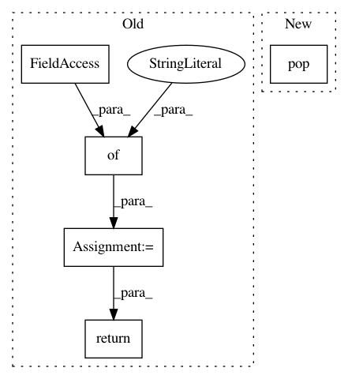

d192ef06119f3eccf569a844b30976db99cfa0f6,python/ray/util/sgd/torch/training_operator.py,TrainingOperator,validate,#TrainingOperator#Any#Any#,206
Before Change
if "num_correct" in metrics:
total_correct += metrics["num_correct"]
stats = {
"batch_count": batch_idx + 1,
"mean_validation_loss": losses.avg,
"mean_accuracy": total_correct / losses.count
}
return stats
def validate_batch(self, batch, batch_info):
Calcuates the loss and accuracy over a given batch.
After Change
batch_info = {"batch_idx": batch_idx}
batch_info.update(info)
metrics = self.validate_batch(batch, batch_info)
metric_meters.update(metrics, n=metrics.pop(NUM_SAMPLES, 1))
return metric_meters.summary()
In pattern: SUPERPATTERN
Frequency: 4
Non-data size: 5
Instances
Project Name: ray-project/ray
Commit Name: d192ef06119f3eccf569a844b30976db99cfa0f6
Time: 2020-03-10
Author: rliaw@berkeley.edu
File Name: python/ray/util/sgd/torch/training_operator.py
Class Name: TrainingOperator
Method Name: validate
Project Name: ray-project/ray
Commit Name: d192ef06119f3eccf569a844b30976db99cfa0f6
Time: 2020-03-10
Author: rliaw@berkeley.edu
File Name: python/ray/util/sgd/torch/training_operator.py
Class Name: TrainingOperator
Method Name: train_epoch
Project Name: keras-team/keras
Commit Name: 23c40e68de2cffa77c92ae48cca1f81913756d2a
Time: 2018-08-21
Author: gabrieldemarmiesse@gmail.com
File Name: keras/layers/convolutional.py
Class Name: Cropping1D
Method Name: get_config
Project Name: keras-team/keras
Commit Name: 72e326dde38cb731424210bfd6e56f301ddc9e2b
Time: 2018-08-28
Author: gabrieldemarmiesse@gmail.com
File Name: keras/layers/convolutional.py
Class Name: ZeroPadding1D
Method Name: get_config